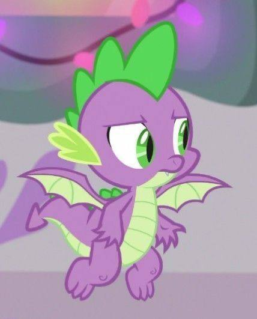
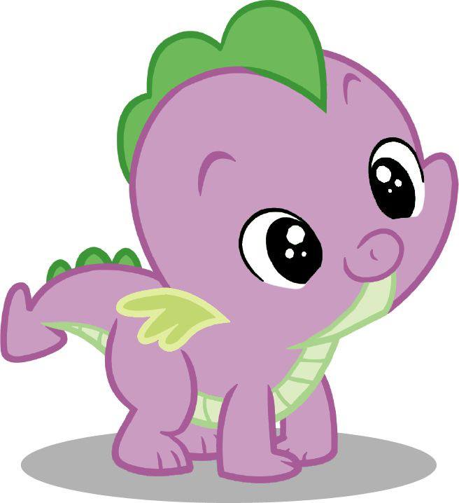
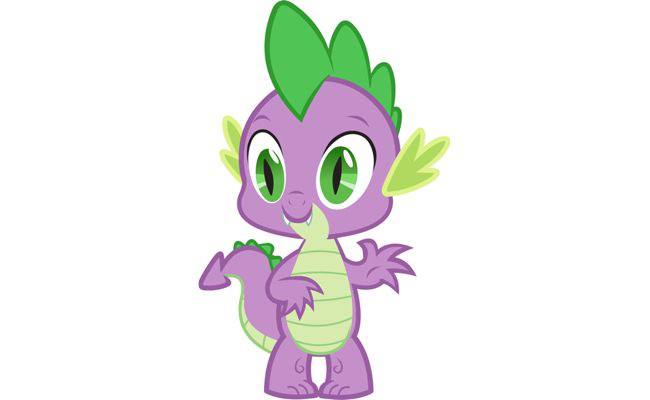

Спайк - один из семи главных героев мультсериала «Дружба — это чудо» . Он лучший друг и её приёмный брат Твайлайт Спаркл; будучи драконом, он использует своё магическое огненное дыхание, чтобы передавать свитки принцессе Селестии и обратно. В 5-м поколении Мой маленький пони: оставь свой след в эпизоде Чешуйчатый остров Спайк предстаёт в образе взрослого дракона и нынешнего Повелителя драконов после столетий магической спячки.
В «Хрониках метки дружбы» Твайлайт Спаркл описывает, как с помощью магии вывела Спайка из яйца во время вступительного экзамена в Школу для одарённых единорогов принцессы Селестии в КантерлотеПосле того как Твайлайт не удалось самостоятельно открыть яйцо с помощью магии, ударная волна от далёкого взрыва заставила её рог наполниться магией, которая не только вывела яйцо из инкубатора, но и мгновенно превратила Спайка в дракона во весь рост. После того как принцесса Селестия вмешалась и рассеяла магическую вспышку, Спайк вернулся к своему новорождённому размеру. В комиксах IDW Мой маленький пони: Дружба — это чудо Выпуск № 40 Спайк становится другом и помощником Твайлайт.
Несмотря на то, что Спайк в целом заботливый и приятный, иногда он развлекается за счёт чужих несчастий. Когда Шестёрка Маней страдает от шутки про яд в Сплетнях о уздечках, Спайк придумывает для них прозвища, основанные на их странных недугах. Он высмеивает Твайлайт Спаркл за то, что она плохо вьёт гнёзда и катается на коньках в Зимнем подведении итогов, а в Пора уже Спайк вместе с Рейнбоу Дэш высмеивает Твайлайт за то, что она пытается избежать катастрофы, стоя на месте.

Спайку тоже нравится танцевать и веселиться вместе с пони. Он танцует на вечеринке-сюрпризе Пинки Пай в «Дружба — это чудо», часть 1, в то время как Твайлайт всю ночь проводит в своей комнате. В «Самая лучшая ночь» Спайк выражает восторг по поводу возможности провести Большой галоп вместе с Шестёркой Маней, хотя в итоге они занимаются своими делами. В She's All Yak Спайк выступает ведущим на Балу Дружбы в Школе Дружбы под сценическим псевдонимом «DJ Scales-n-Tail».
Спайк может быть эмоционально чувствительным как в плане понимания потребностей других, так и в плане неуверенности в себе. В «Хорошо, что хорошо кончается» Совы он ревнует и злится, когда новый ночной помощник Сумеречной Искорки, Совиный Мудрец, начинает справляться с повседневными задачами лучше него. В «Хрустальной империи — часть 2» Спайк плачет из-за ложного видения, в котором Сумеречная Искорка навсегда прогоняет его. В нулевом уроке Спайк — единственный из друзей Твайлайт, кто серьёзно относится к её растущему отчаянию, и в итоге он просит принцессу Селестию вмешаться.
Спайк часто заступается за свою мужественность и пренебрежительно относится ко всему, что считает девчачьим, хотя у него много общих интересов с его подругами-пони. В «Повелителе билетов» Спайк постоянно насмехается над идеей посетить Большой скаковой бал и называет его «девчачьим гала-позорищем», хотя втайне радуется, когда в конце принцесса Селестия присылает ему билет. Он присоединяется к «Шестёрке Мане» в дневном спа-салоне Понивилля в секретном уголке Понивилля и раздражается, когда Радуга Дэш прерывает его процедуру с огурцом. В свадьбе в Кантерлоте — часть 1 Спайк несколько раз за эпизод изображает жениха и невесту, украшающих торт.
Когда Пинки Пай требует, чтобы Спайк «признался» ;во время допроса о том, чем занимались её друзья в Вечеринке одного, он неправильно понимает её намерения и вместо этого признаётся, что любовался своим отражением в зеркале, когда никого не было рядом. После того как Твайлайт говорит Рэйнбоу, что она может быть одновременно умной и спортивной в Прочитай и заплачь, Спайк приводит себя в пример и целует свой бицепс, но в ответ получает лишь странные взгляды.

В Dragon Quest Спайк узнаёт, что другие драконы крупнее и агрессивнее его, и смущается, когда его друзья-пони считают его «очаровательным». Он решает присоединиться к другим драконам и найти своё место среди них; однако, столкнувшись с непримиримыми разногласиями с группой, к которой он присоединился, Спайк возвращается в Понивилль и приходит к выводу, что гордится тем, что пони — его «семья».
Спайк обычно великодушно предлагает свои услуги другим. Он угощает Шестёрку Маневых в «Колодце Совы, который хорошо кончается» и «Пони-игре», а в «Могучих пони» Спайк с радостью помогает пони восстанавливать «Замок двух сестёр». Он готов служить Эпплджек всю жизнь после того, как она спасла его от группы древесных волков в «Спайк к вашим услугам», и помогает Рэрити переносить багаж и собирать драгоценные камни в различных эпизодах.
В Тайне моего излишества Спайк дарит Рэрити безупречный огненный рубин, который он собирался съесть на свой день рождения. Однако, когда он получает много подарков на день рождения, в него вселяется драконья жадность, которая превращает его в полноразмерного дракона и заставляет собирать материалы со всего Понивилля. В конце концов он похищает Рэрити во время своего буйства, но, увидев плащ, который она сшила из огненного рубина, Спайк вспоминает о своей прежней щедрости и возвращается в нормальное состояние.